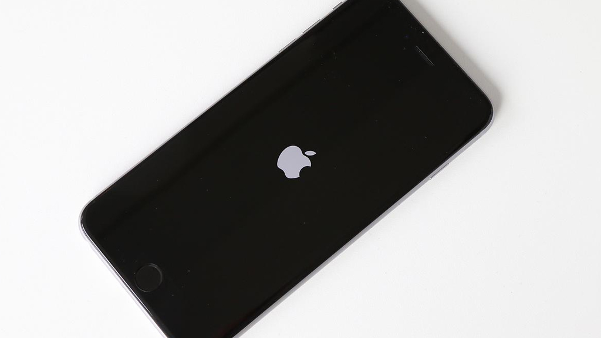

4 cách để hạn chế hiện tượng "Burn-in" (lưu ảnh/bóng mờ) trên iPhone X?
Những rắc rối cần biết trước khi thực hiện Jailbreak cho iPhone
Samsung bắt đầu kiểm tra vấn đề pin không nhận sạc trên Galaxy Note 8 và Galaxy S8+
Rò rỉ thông số kỹ thuật Nokia 6 (2018) trên TENAA với 4GB RAM cùng màn hình tỷ lệ 16:9
Huawei P20, P20 Plus và P20 Pro sẽ có màn hình "tai thỏ" và 3 camera sau?
Phát hiện một số thiết bị Nokia (2018) chuẩn bị ra mắt thông qua ứng dụng Nokia Camera
Với một số người dùng iOS thì việc Jailbreak thiết bị là một điều không thể thiếu, bởi nó đem tới quá nhiều thứ mới mẻ và thú vị như thay đổi giao diện, cài đặt các hiệu ứng đẹp mắt, các thao tác tiện lợi và đặc biệt hơn là được tải về ứng dụng tính phí. Tuy nhiên, cái gì cũng có mặt trái của nó! Dưới đây là một số nguyên nhân chính gây ảnh hưởng không tốt tới thiết bị sau khi thực hiện Jailbreak, mời các bạn cùng tham khảo.
# 1: Không thể nâng cấp phần mềm mới nhất

Như đã biết, công cụ để thực hiện Jailbreak được Hacker khai thác và phát triển từ các lỗ hổng trên hệ điều hành iOS, vì vậy nếu như ở bản iOS mới cập nhật Hacker không thể khai thác được lỗ hổng hoặc việc này mất quá nhiều thời gian thì bạn sẽ có hai sự lựa chọn như sau:

Như đã nói ở trên, việc Jailbreak máy được dựa vào các lỗ hổng bảo mật vì vậy sẽ có rất nhiều hiểm họa tiềm tàng sau khi thực hiện việc này. Theo như Apple khuyến cáo thì việc jailbreak thiết bị sẽ dẫn đến các tình trạng như bị tin tặc đánh cắp thông tin cá nhân, tài khoản tín dụng, tài khoản ngân hàng … Ngoài ra Jailbreak chính là việc tự “mở cửa” cho các loại mã độc nguy hiểm xâm nhập vào, gây ra những tổn thất đáng kể.
Bên cạnh đó, các vấn đề liên quan tới bảo mật sẽ được vá ở phiên bản cập nhập mới, vì vậy việc bạn quyết định tiếp tục sử dụng phiên bản hiện tại đồng nghĩa với việc sống chung với các lỗi này.
# 3: Phát sinh các lỗi không mong muốn
Jailbreak sẽ đem lại cho chúng ta nhiều thứ, bạn có thể khoác cho thiết bị một chiếc áo mới tuyệt đẹp, hay là thêm các thao tác nhanh khác vào “Control Center” thậm chí là tắt mở thiết bị mà không cần sử dụng tới nút nguồn!

Nhưng ngược lại thì sao? Việc can thiệp quá sâu vào hệ điều hành sẽ khiến thiết bị hoạt động không còn ổn định nữa, những quy trình mà Apple đã thiết kế trước đây theo cách hoạt động là 1 – 1 thì bây giờ sẽ là 1 – 5 – 1, chưa kể tới việc bạn mới khám phá ra cái hay ho này và tải tweak vô tội vạ dẫn tới tình trạng xung đột hệ thống.
Các loại giao diện mới thì góp phần rất tích cực tới việc hút kiệt pin của bạn, ngốn ram của bạn thì tuyệt vời. Và máy thì ngày càng trở nên ì ạch hơn … Thậm chí nặng hơn là thiết bị tự khởi động lại liên tục …
Vì vậy, việc Jailbreak có mặt tốt nhưng cũng có mặt xấu của nó. Tốt đối với những ai đã am hiểu về thiết bị cũng như phần mềm, không tốt đối với những ai mới bắt đầu và cần tìm hiểu thật kỹ trước khi thực hiện việc này. Và hiện tại đã có rất nhiều app chính gốc trên Appstore có thể hỗ trợ người dùng như đã Jailbreak, vì vậy chúng ta cũng không nên thực hiện việc này nếu nó không thật sự cần thiết!
Một số lưu ý cho người mới bắt đầu thực hiện Jailbreak:
# 1: Không thể nâng cấp phần mềm mới nhất
Như đã biết, công cụ để thực hiện Jailbreak được Hacker khai thác và phát triển từ các lỗ hổng trên hệ điều hành iOS, vì vậy nếu như ở bản iOS mới cập nhật Hacker không thể khai thác được lỗ hổng hoặc việc này mất quá nhiều thời gian thì bạn sẽ có hai sự lựa chọn như sau:
- Một là nâng cấp lên phiên bản mới, sau đó chờ đợi “tới khi nào” có công cụ hỗ trợ Jailbreak lại thiết bị của bạn. Với việc Apple ngày càng thắt chặt vấn đề bảo mật trên iOS thì mình nghĩ khoảng thời gian của bạn có thể mất tới vài tháng.
- Hai là “cắn răng chịu đựng” ở lại với bản iOS hiện tại để có thể tiếp tục duy trì tình trạng Jailbreak trên thiết bị, đồng nghĩa với việc bạn sẽ không thể trải nghiệm những tính năng hay ho ở bản cập nhập mới như cải thiện hệ thống tốt hơn, thời gian sử dụng pin lâu hơn, giao diện mới đẹp hơn …
Như đã nói ở trên, việc Jailbreak máy được dựa vào các lỗ hổng bảo mật vì vậy sẽ có rất nhiều hiểm họa tiềm tàng sau khi thực hiện việc này. Theo như Apple khuyến cáo thì việc jailbreak thiết bị sẽ dẫn đến các tình trạng như bị tin tặc đánh cắp thông tin cá nhân, tài khoản tín dụng, tài khoản ngân hàng … Ngoài ra Jailbreak chính là việc tự “mở cửa” cho các loại mã độc nguy hiểm xâm nhập vào, gây ra những tổn thất đáng kể.
Bên cạnh đó, các vấn đề liên quan tới bảo mật sẽ được vá ở phiên bản cập nhập mới, vì vậy việc bạn quyết định tiếp tục sử dụng phiên bản hiện tại đồng nghĩa với việc sống chung với các lỗi này.
# 3: Phát sinh các lỗi không mong muốn
Jailbreak sẽ đem lại cho chúng ta nhiều thứ, bạn có thể khoác cho thiết bị một chiếc áo mới tuyệt đẹp, hay là thêm các thao tác nhanh khác vào “Control Center” thậm chí là tắt mở thiết bị mà không cần sử dụng tới nút nguồn!
Nhưng ngược lại thì sao? Việc can thiệp quá sâu vào hệ điều hành sẽ khiến thiết bị hoạt động không còn ổn định nữa, những quy trình mà Apple đã thiết kế trước đây theo cách hoạt động là 1 – 1 thì bây giờ sẽ là 1 – 5 – 1, chưa kể tới việc bạn mới khám phá ra cái hay ho này và tải tweak vô tội vạ dẫn tới tình trạng xung đột hệ thống.
Các loại giao diện mới thì góp phần rất tích cực tới việc hút kiệt pin của bạn, ngốn ram của bạn thì tuyệt vời. Và máy thì ngày càng trở nên ì ạch hơn … Thậm chí nặng hơn là thiết bị tự khởi động lại liên tục …
Vì vậy, việc Jailbreak có mặt tốt nhưng cũng có mặt xấu của nó. Tốt đối với những ai đã am hiểu về thiết bị cũng như phần mềm, không tốt đối với những ai mới bắt đầu và cần tìm hiểu thật kỹ trước khi thực hiện việc này. Và hiện tại đã có rất nhiều app chính gốc trên Appstore có thể hỗ trợ người dùng như đã Jailbreak, vì vậy chúng ta cũng không nên thực hiện việc này nếu nó không thật sự cần thiết!
Một số lưu ý cho người mới bắt đầu thực hiện Jailbreak:
- Luôn có một bản Backup trước khi Jailbreak thiết bị
- Tìm hiểu thật kỹ (tốt nhất là nhờ ai đó đã thành thạo việc này)
- Tải công cụ Jailbreak tại nguồn uy tín, tốt nhất là trang chủ chính thống
- Thực hiện thao tác thật chuẩn xác theo hướng dẫn
- Sử dụng các nguồn (source như cydia.vn chả hạn) đáng tin cậy, chỉ cài các Tweak cần thiết
- Không lưu trữ thông tin cá nhân, tài khoản ngân hàng, thẻ tín dụng … trên thiết bị đã Jailbreak